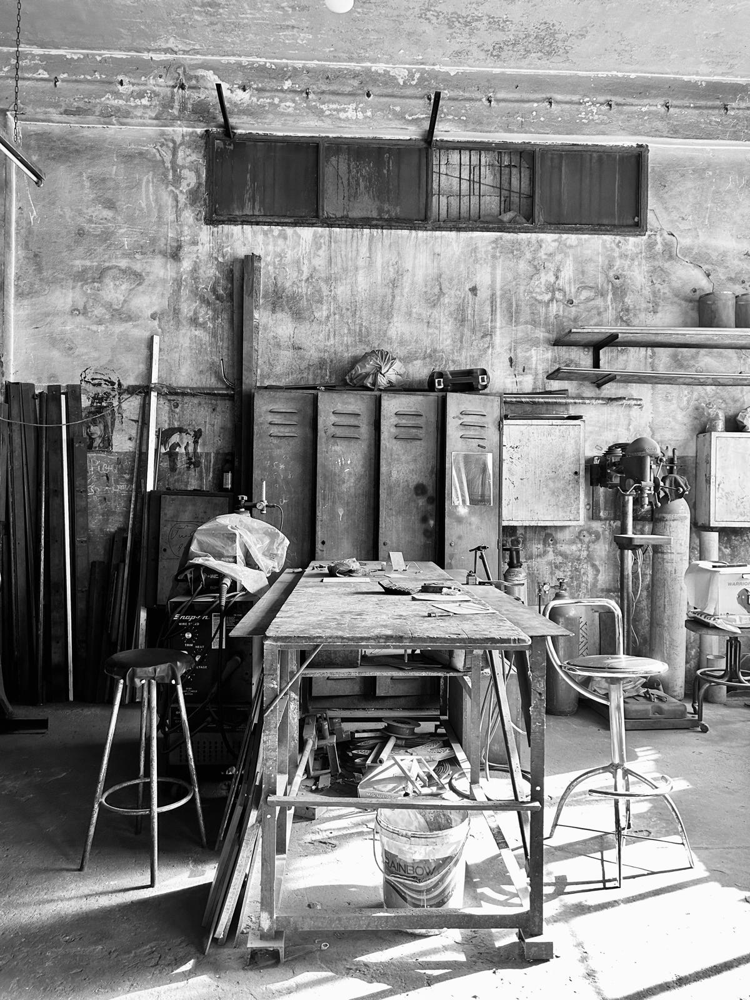

Made with precision.
Made to last.
Made for music.
realhands was born from a simple belief: the objects we interact with while listening to music should be as thoughtfully crafted as the music itself. Born between Beirut and Paris, realhands brings together decades of family craftsmanship, precision machining, and a shared passion for music. Behind every piece is a family workshop with more than 30 years of experience in stainless steel craftsmanship, creating objects that unite technical excellence, enduring quality, and timeless design.


Every realhands record stabilizer is machined from solid stainless steel with meticulous attention to detail. We chose stainless steel not only for its elegance, but for its exceptional properties. Naturally corrosion-resistant, highly durable, and infinitely recyclable, it retains its beauty and structural integrity for decades. Its reassuring weight, smooth tactile feel, and exceptional resistance to wear make it the ideal material for an object designed to be handled every day and cherished for a lifetime.
We believe that vinyl is more than a format; it is a ritual. Lowering the needle, selecting a record, holding a beautifully crafted object in your hand—these moments deserve products that feel substantial, authentic, and built to last.
Rather than chasing trends or mass production, we focus on creating small batches with uncompromising quality. Every curve, finish, and surface is refined to provide a tactile experience that complements the act of listening.
realhands is for music lovers, collectors, DJs, and anyone who values craftsmanship as much as sound.